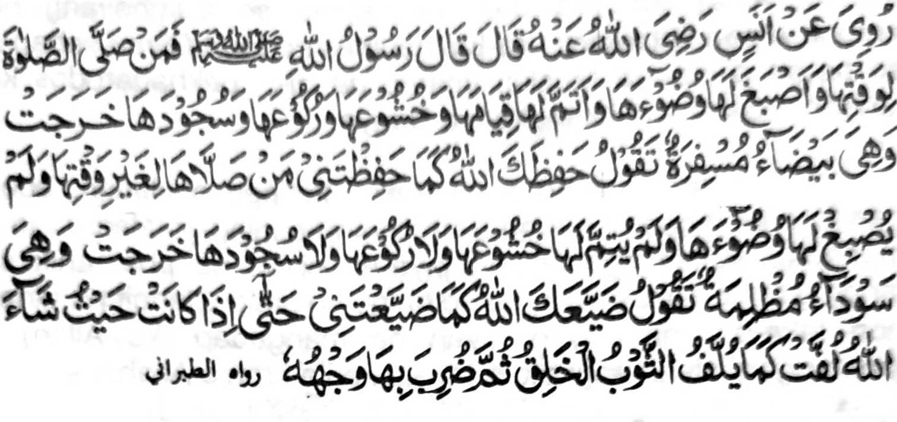

Miyapanothol a so Anas (Radhiallaho ’Anho) na pitharo iyan a pitharo o Rasulollah (Sallallaho ’Alaihi Wasallam), "Sa tao a ipamayandeg iyan so manga Sambayang ko manga wakto niyan a phipiya-piyaan niyan so abdas iyan, go tarotopen niyan so qiyam iyan go so kambayorantang go so Ruku iyan go so Sojod iyan na lomiyo so Sambayang iyan a tanto a matihaya a pekhababaya sa tharo-on niyan a siyap ngka o Allah sa lagid o kiyasiyapa ngka raken. Sa tao a zambayang sa ta-akhir go da niyan phiya-piya-i so Abdas iyan go da niyan tarotopa so kambayorantang on go so Ruku go so Sojod iyan na lomiyo so Sambayang iyan sa maitem a marata-i paras a (gi-i niyan ipamaninta so tao) tharo-on niyan a binasa-a ngka o Allah sa lagido kiyabinasa-a ngka raken, taman sa ikabaya o Allah a komo-komon sa lagido boringen a togak na oriyan niyan na ipapes sa paras o tao.’’
Tanto a miyagontong so tao a so Sambayang na miya-samporna so langon o okit a kinggolalanen non ka giyaden angka-iya Sambayang a piphaporo-an a simba si-i ko Allah i pephamangeni sa dowa-a para rekaniyan. Ogaid na antona-ai pandapatka ko kadakelan imanto ko manga sambayang o manga tao? Phesodod siran manaros a pho-on ko Ruku’, na dapen miporo so olo niyan pho-on ko paganay a Sodod na somiyodod siran den sa ika dowa a lagid den o pephanoka a kakowak. So morka a khaparoli o tao na miya-aloy sangka-iya Hadith. Amay ka aya den mamaninta so Sambayang na antona-a pen i phakaren sa kakhabinasa o tao? Giya-i sabap a so betad o manga Muslim imanto na gi-i pekhadarodos ko langon o darepa si-i sangka-iya Donya.
Lagida-i mambo a miya-aloy ko ped a Hadith, aden baden a ini-oman non a so Sambayang a ining-golalan o tao a makapagi-Ikhlas ago phipiya-piya-an niyan na phamanik sa langit a tanto a matiyaya, na so langon o pinto o langit na tanan non leka-an, na oriyan niyan na mangadap (ko Allah) a ipamangeni niyan angkoto a tao sa karila-i ron o Allah.
So Nabi (Sallallaho ’Alaihi Wasallam) na miyatharo iyan, "Aya ibarat o tao a di niyan tharotopen so Ruku’ na lagid o maogat a ba-i a biyogar iyan so ika-ogat iyan."
Si-i ko isa a Hadith, na miyatharo-on, "Madakel a tao a gi-i phowasa na da-a miyaparoli niyan ko powasa niyan a rowar ko kiyapakagedam iyan sa ka-or ago kawaw, ago madakel a barasimba a mithoday na da-a miyaparoli niyan ko kiyathoday niyan a rowar sa da-on katoroga."
So Aisha (Radhiallaho ’Anha) na piyanothol iyan a miyaneg iyan so Nabi, (Sallallaho 'Alaihi Wasallam) a gi-i niyan tharo-on, "Tiyangked o Allah a phakalidasen Niyan (ko siksa sa Alongan a Maori) so tao a inipayamandeg iyan so Sambayang a lima ko oman gawi-i si-i ko manga wakto niyan, a tolabos so ni-at iyan ago piphiya-piya-an niyan a rakhes a mapiya so abedas iyan. So peman so tao a da niyan nggolalanen angka-i na da-a kasarigan a bagi-an niyan. Khapakay a sabap ko limo o Allah na karila-an sekaniyan na khapakay a masiksa."
Miyaka-isa na so Nabi (Sallallaho 'Alaihi Wasallam) na somiyong ko manga Sahabah na pitharo iyan, "Katawan niyo o antona-ai katharo o Allah?' Pitharo o manga Sahabah, "So Allah ago so Sogo Iyan i lebi a mata-o." Kiyasoy niyan angkoto a pakaiza iyan sa miyaka dowa na lagido to pen a sembagon o manga Sahabah niyan. Oriyan niyan na pitharo iyan, "Pitharo o Allah, 'Ibet ko Kala Aken ago so Kasosoti Aken, a phakasoleden Ko den sa Sorga so tao a gi-i niyan ipamayandeg so Sambayang a lima ko oman gawi-i si-i ko manga wakto niyan. So peman so tao a da niyan siyapa so Sambayang, na khapakay a rila-an Aken sabap ko Limo Aken odi na siksa-an Aken sekaniyan.